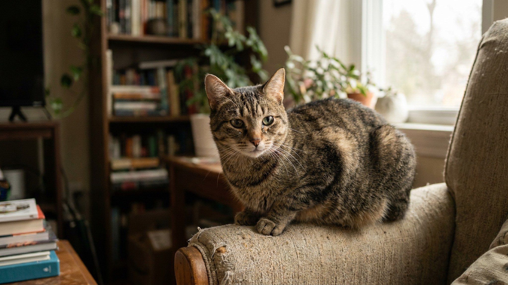

Выделения из глаз у кошки: на что смотреть дома и когда не откладывать визит к ветеринару

6 июня 2026 · 7 минут чтения · Наблюдение · Уход · Кошки
Небольшие «засохшие слёзки» в уголках глаз — привычная картина для многих хозяев кошек. Но не все выделения одинаковы. Одни — просто физиология, другие — сигнал, с которым стоит обратиться к ветеринару. Главное умение владельца — научиться замечать разницу и правильно описать увиденное врачу.
🐾 Спросите AI-ветеринара прямо сейчас
AnimaLife — приложение, где AI-ветеринар отвечает на вопросы о кошке или собаке 24/7. Бесплатно, без записи и очередей.
Открыть в Telegram → Открыть в MAX →
Что считается нормой
Небольшое количество прозрачных или слегка коричневатых засохших выделений в уголках глаз — это норма для большинства кошек. Это называют «сонными выделениями»: слёзная плёнка, которая ночью подсыхает и скапливается в уголке.
Нормальные выделения:
- Небольшой объём — одна-две маленькие «крошки» в уголке глаза.
- Цвет — прозрачный, светло-коричневый или рыжеватый (от окисления на воздухе).
- Консистенция — засохшая, легко убирается влажной салфеткой.
- Оба глаза одинаково, симметрично.
- Кошка не трёт глаза лапой, не прищуривается.
На что смотреть при ежедневном осмотре
Привычка осматривать глаза кошки раз в день — занимает 30 секунд и позволяет заметить изменения рано. Удобно делать это при кормлении, когда кошка спокойна.
Что оцениваем:
- Количество: больше обычного или примерно одинаково?
- Цвет: прозрачные/коричневатые или стали желтоватыми, зеленоватыми?
- Консистенция: засохшие корочки или обильная влажная жидкость?
- Симметрия: один глаз или оба?
- Поведение кошки: трёт глаза лапой? Прищуривается? Избегает яркого света?
- Белки глаз: чистые или покраснели?
Сигналы, при которых стоит записаться к ветеринару
Это не список тревог, а список наблюдений, которые хозяин должен отметить и показать врачу.
- Выделения стали заметно обильнее, чем обычно.
- Цвет изменился — появился жёлтый, зелёный или серый оттенок.
- Выделения влажные, не засыхают, текут по мордочке.
- Кошка щурит один или оба глаза, трёт морду лапой.
- Вокруг глаза появилась «влажная дорожка» — шерсть окрашивается.
- Видно покраснение или помутнение.
- Изменилось только один глаз (асимметрия часто говорит о локальной причине).
- Изменения держатся больше двух дней подряд.
Всё перечисленное — не основание для паники, но хороший повод позвонить в клинику и описать ситуацию. Ветеринар решит, нужен ли срочный осмотр или плановый.
Как правильно убирать обычные выделения дома
Ежедневная гигиена глаз — простая рутина, которая помогает держать ситуацию под контролем.
- Используйте специальные ватные диски или мягкие салфетки для животных.
- Смочите тёплой кипячёной водой (не холодной, не горячей).
- Аккуратно протирайте от внешнего уголка к внутреннему — от уголка к носу.
- Каждый глаз — отдельная салфетка, не используйте одну для обоих глаз.
- Не надавливайте на глаз, не вытирайте резкими движениями.
- После — угощение. Кошка должна воспринимать эту процедуру спокойно.
Какие породы требуют особого внимания
Кошки с приплюснутой мордочкой — персы, экзоты, британские и шотландские — устроены так, что их носослёзный канал имеет нестандартный ход. У них выделения из глаз бывают обильнее от природы, и без регулярного ухода образуются дорожки, раздражающие кожу.
Если у вас такая порода — ежедневная гигиена глаз обязательна, а визиты к ветеринару с осмотром носослёзных каналов рекомендованы раз в полгода.
🐾 Дневник здоровья питомца — в кармане
Вес, прививки, симптомы и напоминания в одном приложении. AnimaLife следит за здоровьем питомца вместо вас.
Завести дневник → Открыть в MAX →
🐾 Понравился разбор?
Подпишитесь на канал — каждый день разбираем по одному тревожному симптому у кошек и собак: что в пределах нормы, а когда пора к врачу. Подпишитесь, чтобы не пропустить разбор, который может спасти здоровье вашего питомца.
Когда ехать срочно, не ждя записи
Большинство изменений в состоянии глаз — плановые поводы для визита. Но есть ситуации, когда затягивать не стоит:
- Кошка резко перестала открывать один или оба глаза.
- Видно помутнение зрачка или роговицы.
- Глаз выглядит «вытекающим» или изменилась его форма.
- Резкое изменение за несколько часов — утром всё было нормально, вечером явное ухудшение.
В таких случаях обратитесь к ветеринару в тот же день.
Профилактика: как снизить риск проблем с глазами
Глаза кошки — достаточно устойчивая система, и при хорошем общем уходе проблем обычно немного. Несколько простых вещей помогают сохранить здоровье глаз.
- Ежедневный осмотр: 30 секунд при кормлении. Заметили изменение рано — реагировать проще.
- Чистота среды: пыль, дым, сквозняки, аэрозоли рядом с кошкой — всё это раздражает слизистые. Убирайте регулярно, не используйте аэрозоли в комнате, где кошка проводит время.
- Регулярные ветеринарные осмотры: раз в год для молодых кошек, раз в полгода после 7 лет. Глаза всегда входят в стандартный осмотр.
- Плановые вакцинации: некоторые инфекции влияют на состояние глаз — актуальная вакцинация снижает риск по схеме, которую обсуждают с ветеринаром.
- Правильный корм: дефицит некоторых нутриентов влияет на состояние слизистых. Качественный сбалансированный рацион — основа общего здоровья.
Уход за породами с обильными выделениями
Персидские, экзотические и британские кошки требуют регулярного ухода за областью глаз. При ненадлежащем уходе влажные дорожки от выделений раздражают кожу вокруг глаз — появляется покраснение, «ржавые» пятна на светлой шерсти.
- Протирайте область глаз ежедневно с рождения кошки — приучайте к процедуре с котёнка.
- Специальные лосьоны для ухода за областью глаз у брахицефалов — спросите у ветеринара, что подойдёт вашей кошке.
- Если дорожки уже есть — уходит несколько недель регулярного ухода, чтобы кожа восстановилась.
- При стойком раздражении кожи вокруг глаз — обратитесь к ветеринару.
Как описать ситуацию врачу
Чем точнее вы опишете то, что наблюдали, тем быстрее ветеринар поймёт ситуацию. Хорошее описание включает:
- Когда заметили изменение (1 день, 3 дня, неделя).
- Один глаз или оба.
- Цвет и консистенция выделений.
- Поведение кошки — трёт, щурит, активна или нет.
- Что менялось дома: новые питомцы, переезд, смена корма, уборка с химией.
- Фото или видео — снимите на телефон, это очень помогает врачу.
Хорошо подготовленный владелец экономит время на осмотре и помогает ветеринару поставить правильный вопрос быстрее. Наблюдение — это ваш главный инструмент в уходе за питомцем.
Материал носит информационный характер и не заменяет очную консультацию ветеринара.
← Все статьи · Открыть AnimaLife в Telegram · RSS